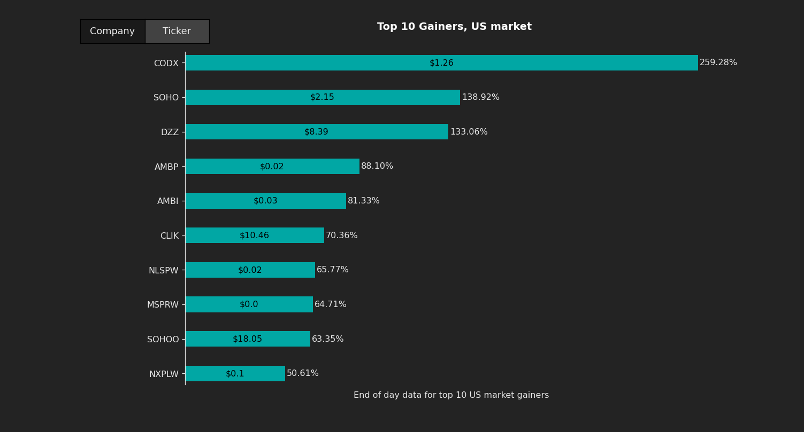
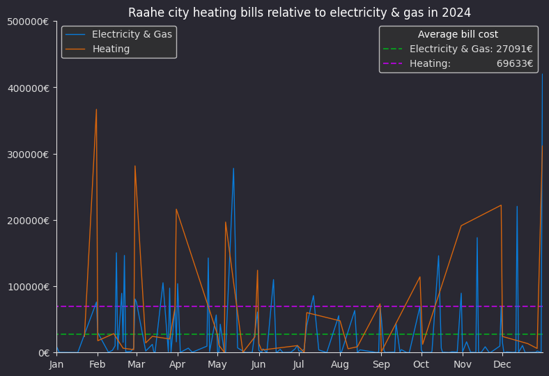
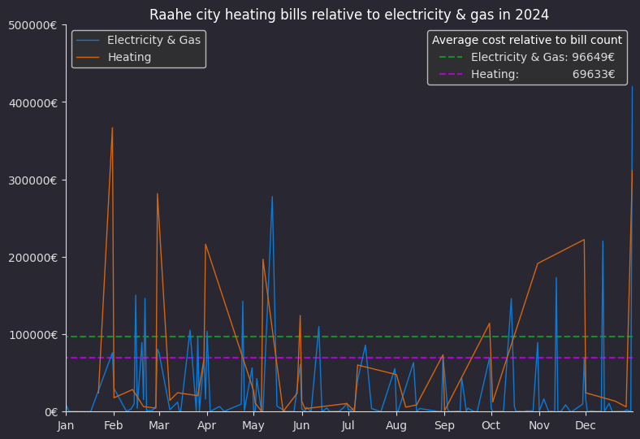
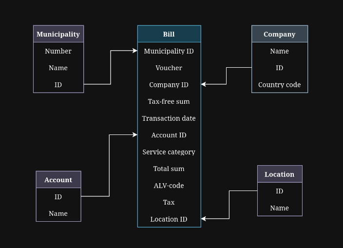
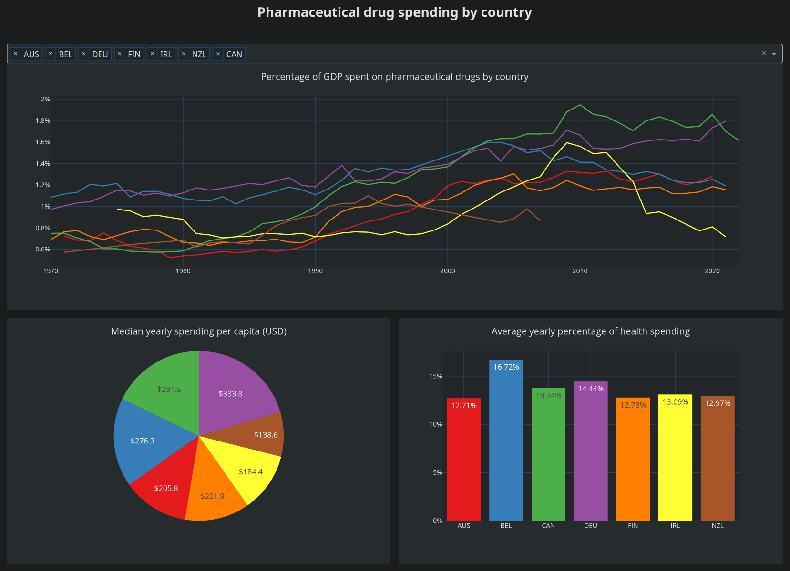
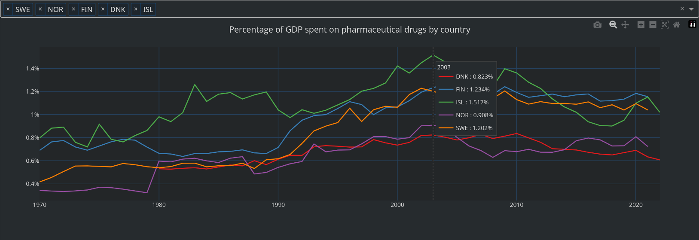
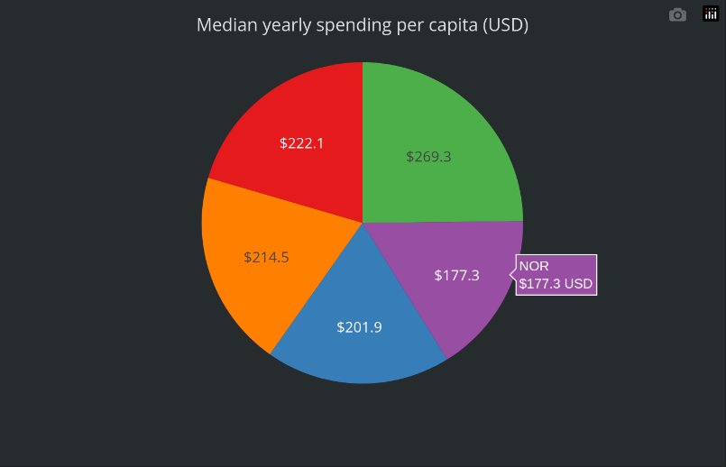
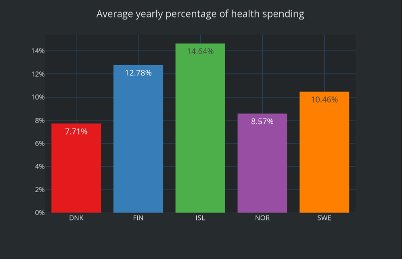

vaaraniemituomas@gmail.com
The intent of this website is to display my interests in learning about all things programming and data.
I'm interested in all kinds of technology and learning new things. I specifically gravitated towards data analysis and engineering so I independently started learning various python libraries and SQL. My previous programming knowledge is mostly in C and C++. I also learned some basic HTML and CSS for this website.
I'm based in Finland and my education background is in ICT engineering.
The project pulls data from two different public APIs to display top 10 end of day US market gainers.
The graph automatically cleans and formats the API data to be displayed and has minimal interactivity to show both the company's name and it's ticker. The data is ordered by growth percentage and the bars also display current stock market price.
First it pulls top 20 gainers, losers and actively traded tickers from Alpha Vantage API, from which the top 10 gainers are selected. However, this API point does not include the company names, so the tickers of said gainers are then sent to Financial Modeling Prep API to fetch corresponding company names.
This way the user can select themselves which they want to view.

I noticed the API sometimes includes extra unnecessary symbols to the tickers, which would result in errors when using them to request the matching company names, so I added a regex filter to remove them.
The data is handled based on the tickers which are always unique and company-specific, so it doesn't matter even if two companies share similar name. The displayed names are trimmed to maximum of 35 characters so they always fit on the graph.
As this is end of day data and thus needs to only be updated once per day, it well fits within the request limits of these public APIs.
Data sources:
Alpha Vantage API Financial Modeling Prep API Github repoThis project uses Raahe city open bill data to compare electricity & gas bill costs to heating bills.
The original data was in the form of excel spreadsheet, which I separated into several CSV files using python. I inserted these files into fitting relational tables in a SQL database. The database is then queried by a python script to display this graph.
The first clear noticeable trend is the reduced costs during summer. It's much more drastic in heating costs, while electricity & gas spendings increase the most in early winter.

However, there is a difference in the bill counts; there are over three times the amount of electricity & gas bills in comparison to heating bills from 2024. This initially makes it seem as if more was spent on heating.
I adjusted the averages relative to bill count and made the graph automatically check for differences in the counts and account for it accordingly.

The original spreadsheet had a lot of repeating text so I organized it into several relational tables which store information about the companies, locations and accounts to avoid repeating these values on thousands of rows.
These fields populating the tables are entirely taken from the spreadsheet and categorized as I saw fit. As this is public data, it doesn't contain the more sensitive fields.

The graph automatically pulls everything needed from this database, including the year in the title. This database is ran locally using mariadb.
Data sources:
avoindata.fi Github repoInteractive web app dashboard which lets the user organize data by country.
This interface loads time series pharmaceutical drug spending data from a CSV file and displays it on a HTML-based web environment. By default it shows first five countries from the list, which the user can easily change.

From this dashboard the user can compare the percentage of GDP spent on pharmaceutical drugs, median yearly spending per capita in USD and the average percentage of yearly health spending used on pharmaceutical drugs.
Each selection is automatically assigned different color and each graph follows the same selection.

The graphs have an hover table, which shows the exact data user is hovering over, allowing easier analysis even with a large number of countries selected.

The entire interface automatically updates when user changes selection of countries, keeping uniform color across tables.Text color in the graphs also changes along with the color for optimal view.

For this project the dashboard was hosted locally, but it could easily be on a server for online view.
As an web-based application, it uses CSS styling from a separate file.
Data sources:
Datahub.io Github repo